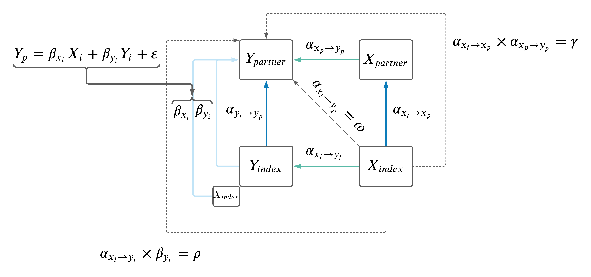

Update Meeting: 15-10-2021
jennysjaarda
2021-10-12
Last updated: 2021-10-18
Checks: 7 0
Knit directory: proxyMR/
This reproducible R Markdown analysis was created with workflowr (version 1.6.2). The Checks tab describes the reproducibility checks that were applied when the results were created. The Past versions tab lists the development history.
Great! Since the R Markdown file has been committed to the Git repository, you know the exact version of the code that produced these results.
Great job! The global environment was empty. Objects defined in the global environment can affect the analysis in your R Markdown file in unknown ways. For reproduciblity it’s best to always run the code in an empty environment.
The command set.seed(20210602) was run prior to running the code in the R Markdown file. Setting a seed ensures that any results that rely on randomness, e.g. subsampling or permutations, are reproducible.
Great job! Recording the operating system, R version, and package versions is critical for reproducibility.
Nice! There were no cached chunks for this analysis, so you can be confident that you successfully produced the results during this run.
Great job! Using relative paths to the files within your workflowr project makes it easier to run your code on other machines.
Great! You are using Git for version control. Tracking code development and connecting the code version to the results is critical for reproducibility.
The results in this page were generated with repository version 28db79b. See the Past versions tab to see a history of the changes made to the R Markdown and HTML files.
Note that you need to be careful to ensure that all relevant files for the analysis have been committed to Git prior to generating the results (you can use wflow_publish or wflow_git_commit). workflowr only checks the R Markdown file, but you know if there are other scripts or data files that it depends on. Below is the status of the Git repository when the results were generated:
Ignored files:
Ignored: .DS_Store
Ignored: .Rhistory
Ignored: .Rproj.user/
Ignored: analysis/meetings.html
Ignored: proxyMR_figure_data.RData
Ignored: renv/library/
Ignored: renv/local/
Ignored: renv/staging/
Untracked files:
Untracked: R/proxyMR_figures.R
Untracked: R/proxyMR_hiercharchy.R
Untracked: analysis/project_status.Rmd
Unstaged changes:
Modified: analysis/index.Rmd
Modified: analysis/todo_list.Rmd
Note that any generated files, e.g. HTML, png, CSS, etc., are not included in this status report because it is ok for generated content to have uncommitted changes.
These are the previous versions of the repository in which changes were made to the R Markdown (analysis/update_meeting_15_10_2021.Rmd) and HTML (docs/update_meeting_15_10_2021.html) files. If you’ve configured a remote Git repository (see ?wflow_git_remote), click on the hyperlinks in the table below to view the files as they were in that past version.
| File | Version | Author | Date | Message |
|---|---|---|---|---|
| Rmd | 28db79b | jennysjaarda | 2021-10-18 | fix date in update meeting |
| html | 28db79b | jennysjaarda | 2021-10-18 | fix date in update meeting |
1 Sample definition issue.
1.1 Update.
Noticed that the sample sizes we were working with were quite a bit larger than the Neale database. After a bit of digging, I think I figured out the main reason(s): it seems to be a result of the way we filtered related individuals.
- First of all, because we’ve done all analyses in each sex separately, I also have performed the related filters in each sex separately. Meaning there is surely related individuals between sexes that remain (of course each individual couple has been filtered separately for their own relatedness).
- Second, I am using a function to retain the maximal set of unrelated individuals which is relatively computation heavy and I believe that Neale would have simply filtered based on
used_in_pca_calculationfrom the QC file, which results in <<N.
I assume Neale also applied related filtering before PHESANT transformations, while I applied it after (I was thinking that if someone was performing an analysis on a subset of UKB, they would have unnecessarily lost individuals even though the two related individuals weren’t in their subgroup). The problem is, these differences result in slightly different phenotypes in some cases I’ve realized.
For example, phenotype 1050 (amount of time spent outside, hours) is converted by the PHESANT pipeline to an ordinal variable with only 3 categories because the upper categories are so small. Where to split the categories directly depends on the data, with the goal to have roughly equal sized groups. Anyways, in Neale it’s split in different place than in our data.
1.1.1 Discussion points.
- Should we apply the same filter as Neale to get roughly the same sample size and data (particularly for these categorical phenotypes)?
- Regarding the category definitions: best to have something as similar as possible to Neale’s, because the instrument selection is based on his summary stats, which used his definition. But if it is hard to replicate his definition, it’s not a big problem, it is much more important that we move forward fast
- And/or is it a problem that there we would have related individuals across sexes?
- For the relateds: unfortunately, they have to be excluded (male-female relatives too, not only same-sex relatives), because when we meta-analyse male->female and female->male results, we assume inependence in the estimates, which is not true if you don’t exclude all relatives.
1.2 Update 2.0.
I was able to nearly mimic the sample size of the round 1 GWAS, but not the round 2 GWAS. In the blog post describing the first release, it is mentioned that N = 337,199 individuals are used in the GWAS. I can nearly replicate this number exactly with my data by removing un consenting, non-white and only retaining those that were used_in_pca_calculation (from the genetic QC file). However in the round 2 blog post, the sample size increases to N = 361,194 individuals.
The details compairing the two samples are found on the github page, specifically:
- imputed-v3 parameters
- Used.in.pca.calculation filter (unrelated samples)
- sex chromosome aneuploidy filter
- Use provided PCs for European sample selection to determine British ancestry
- Use 7 standard deviations away from the 1st 6 PCs
- Further Filter to self-reported ‘white-British’ / ‘Irish’ / ‘White’
- QCed sample count: 361194 samples
- imputed-v2 parameters
- Used.in.pca.calculation filter (unrelated samples)
- sex chromosome aneuploidy filter
- White.british.ancestry filter
- QCed sample count: 337199 samples
1.2.1 Discussion points.
Our current filtering matches closely the v2 filtering. If we tried to mimic the v3 filtering, we could increase our sample size. What do we think about this discrepency? And more importantly, the decrease in power due to smaller sample size (about 25K less than the v3 parameters)?
2 Progress update.
2.1 Phenotype selection.
- Added back binary phenotypes.
- Removed all dietary phenotypes (binary, ordinal and continuous).
- Removed some redundant phenotypes:
- Left-side body traits (highly correlated with right-side) were removed
- All ‘qualifications’ data (corresponding to field 6138) because data is roughly captured with continuous variables (such as years of education).
- See phenotype selection document for complete summary of selection and remaining phenotypes.
2.2 Two-trait MR filtering.
Restrict to only XY pairs that are have correlation < 0.8. Correlations were calculated in the full biobank (unrelated, British, consenting etc.), not just within couples, in both sexes combined. Trait pairs and their correlations are summarized in the table below.
In total, #r length(which(household_MR_summary.DT$corr_traits > 0.8)) trait pairs were removed due to correlation > 0.8.
Note: after filtering out pairs with high correlation, a bonferroni correction applied (p < 0.05 / [num remaining pairs after correaltion filter]) before examining paths from \(X_i \rightarrow Y_p\) (i.e we only examined pairs that were significant along the diagonal).

| Version | Author | Date |
|---|---|---|
| fda4843 | jennysjaarda | 2021-09-14 |
2.3 Adjust \(Y_i \rightarrow Y_p\) for effect of \(X_i \rightarrow Y_p\) in MVMR.
Previously, I had adjusted the \(Y_i \rightarrow Y_p\) MR results for effects of \(X_i\) (as depicted below), but had only used \(Y\) IVs.

| Version | Author | Date |
|---|---|---|
| 529020f | jennysjaarda | 2021-09-24 |
Decided best to also include all \(X\) IVs in the model as well. MRMR model is: \(Y_p \sim Y_i + X_i\).
To ensure a set of independent SNPs, \(X\) and \(Y\) IVs were clumped using at a threshold of \(r^2\) < 0.001 using the 1000 Genomes European data set. Clumping p-values for priorization of SNPs, were based on the Neale summary statistics with \(Y_i\) in both sexes, ensuring the same set of SNPs were selected in the male and female models.
2.4 MVMR
For each \(X_i \rightarrow Y_p\) MR, we included relevant covariates (Z’s) in a MVMR framework in the \(X_p \rightarrow Y_p\) MR. Z’s were selected based on having BF significance in both of the MRs:
- \(X \rightarrow Z\)
- \(Z \rightarrow Y\)
After Z’s were selected, they were further pruned based on phenotypic correlation (same as above). First, any Z with phenotypic correlation with \(X\) or \(Y\) > 0.8 was removed. Second, beginning with the most significant \(Z_j\) association with \(Y\) (i.e. \(Z \rightarrow Y\)), all reamining Z’s with phenoytpic correlation > 0.8 were removed. This process was repeated until all remaining Z’s had phenotypic correlation < 0.8 with each other and \(X\) and \(Y\).
The resulting MVMR model is: \(Y \sim X + Z_1 + ... + Z_k\) run in same individual (see figure).

| Version | Author | Date |
|---|---|---|
| 1afb033 | jennysjaarda | 2021-09-14 |
Finally, IVs for all \(Z\) and \(X\) were clumped as above (using at a threshold of \(r^2\) < 0.001 using the 1000 Genomes European data set. Clumping p-values for priorization of SNPs, were based on the Neale summary statistics with \(X_i\) in both sexes, ensuring the same set of SNPs were selected in the male and female models).
2.5 PC impact
Tested the following: - cor(PC_i,PC_p) for each PC (i.e. within couple PC correlation). - cor(X,PC) for all PCs.
PC correlations among couples is shown below.
Correlation of PCs with traits in pipeline is shown below.
Next, I calculated the correlation due to counfounding as cor(X,PC)^2*cor(PC_i,PC_p) values, and plotted them against the raw cor(X_i,X_p) values.
sessionInfo()R version 4.1.0 (2021-05-18)
Platform: aarch64-apple-darwin20 (64-bit)
Running under: macOS Big Sur 11.5.2
Matrix products: default
BLAS: /Library/Frameworks/R.framework/Versions/4.1-arm64/Resources/lib/libRblas.dylib
LAPACK: /Library/Frameworks/R.framework/Versions/4.1-arm64/Resources/lib/libRlapack.dylib
locale:
[1] en_CA.UTF-8/en_CA.UTF-8/en_CA.UTF-8/C/en_CA.UTF-8/en_CA.UTF-8
attached base packages:
[1] stats graphics grDevices datasets utils methods base
other attached packages:
[1] kableExtra_1.3.4 knitr_1.33 DT_0.18 forcats_0.5.1
[5] stringr_1.4.0 dplyr_1.0.7 purrr_0.3.4 readr_2.0.1
[9] tidyr_1.1.3 tibble_3.1.2 ggplot2_3.3.5 tidyverse_1.3.1
[13] targets_0.7.0 workflowr_1.6.2
loaded via a namespace (and not attached):
[1] Rcpp_1.0.7 svglite_2.0.0 lubridate_1.7.10 ps_1.6.0
[5] assertthat_0.2.1 rprojroot_2.0.2 digest_0.6.27 utf8_1.2.1
[9] R6_2.5.0 cellranger_1.1.0 backports_1.2.1 reprex_2.0.0
[13] evaluate_0.14 highr_0.9 httr_1.4.2 pillar_1.6.1
[17] rlang_0.4.11 readxl_1.3.1 rstudioapi_0.13 data.table_1.14.0
[21] whisker_0.4 callr_3.7.0 rmarkdown_2.10 webshot_0.5.2
[25] htmlwidgets_1.5.3 igraph_1.2.6 munsell_0.5.0 broom_0.7.6
[29] compiler_4.1.0 httpuv_1.6.1 modelr_0.1.8 xfun_0.23
[33] systemfonts_1.0.2 pkgconfig_2.0.3 htmltools_0.5.1.1 tidyselect_1.1.1
[37] codetools_0.2-18 viridisLite_0.4.0 fansi_0.5.0 crayon_1.4.1
[41] tzdb_0.1.2 dbplyr_2.1.1 withr_2.4.2 later_1.2.0
[45] grid_4.1.0 jsonlite_1.7.2 gtable_0.3.0 lifecycle_1.0.0
[49] DBI_1.1.1 git2r_0.28.0 magrittr_2.0.1 scales_1.1.1
[53] cli_2.5.0 stringi_1.6.2 renv_0.13.2-62 fs_1.5.0
[57] promises_1.2.0.1 xml2_1.3.2 ellipsis_0.3.2 generics_0.1.0
[61] vctrs_0.3.8 tools_4.1.0 glue_1.4.2 hms_1.1.0
[65] processx_3.5.2 yaml_2.2.1 colorspace_2.0-1 rvest_1.0.0
[69] haven_2.4.1